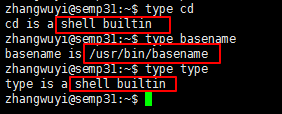

命令概述¶
命令汇总
我们将从以下几个方面来了解一下命令的基本概念
0x00 命令分类¶
在linux中命令可以分为两大类：
内部命令(builtin command)：在bash中内部实现的命令叫做内置命令外部命令(binary command)：在文件系统上的某个位置有一个与命令名称对应的可执行文件
我们可以通过type命令来判断命令的类型

0x01 命令执行¶
在linux中命令的执行逻辑是：
- 1.当在shell窗口输入一个命令时，shell进程会读取
hash查找表，查看该表中是否缓存了输入命令对应可执行文件所在路径，如果缓存了就直接引用该路径，找到可执行文件并执行；如果没有缓存就执行第二步 - 2.shell会通过一个
变量PATH设定多个路径，当用户输入命令没有在hash查找表查找到缓存信息时，shell会自动读取变量PATH的值，由左往右到这些路径查找与命令名称相同的可执行文件，然后执行；如果没有找到则会报错，说明没有该命令
# 查看hash查找表:用来保存以前执行过命令对应二进制执行文件路径
$hash
# 查看PATH环境变量的值
$echo $PATH # 在shell语言中变量需要通过$来引用访问
# 将/usr/local/docker/bin路径添加到PATH环境变量中
$export PATH=/usr/local/docker/bin:$PATH # 该配置只对当前shell进程有效
# 不带任何参数的export只是输出当前shell进程的环境变量的值；如果像上述添加参数，则表示重置指定环境变量的值
0x02 命令帮助¶
在linux终端，面对命令不知道怎么用，或不记得命令的拼写及参数时，我们需要求助于系统的帮助文档；linux系统内置的帮助文档很详细，通常能解决我们的问题，我们需要掌握如何正确的去使用它们
通常我们使用man命令来查看命令的说明文档；使用方法如下：
$man COMMAND # 显示命令的man说明文档
$man 3 COMMAND # 显示命令的第3类man说明文档
$man -k KeyWord # 根据部分关键字来查询命令的说明文档；可以使用通配符
# 当man文档中出现乱码的情况时，可以使用export LANG=en命令将语言设置为en
在man的帮助手册中，将帮助文档分为了9个类别，有的关键字可能存在多个类别中， 我们就需要指定特定的类别来查看(常用的是分类1和分类3)
1：用户可以操作的命令或者是可执行文件2：系统核心可调用的函数与工具等3：一些常用的函数与数据库4：设备文件的说明5：设置文件或者某些文件的格式6：游戏7：惯例与协议等。例如Linux标准文件系统、网络协议、ASCⅡ，码等说明内容8：系统管理员可用的管理条令9：与内核有关的文件
man命令的执行逻辑是：从1~9段(man1,man2……)依次查找命令关键字第一次出现的帮助文档，先解压该帮助文档然后调用less命令显示帮助文档的文档内容。man文档的存放路径一般是/usr/share/man
所以man默认显示最前面的分类文档，如果一个命令有多个分类文档，我们可以通过whatis命令查看命令存在哪些分类文档。然后再通过man N COMMAND命令查看指定分类文档的信息
$whatis COMMAND # 显示命令所处的man分类页面
$whatis -w "ca*" # 显示通配符匹配到的命令所处man分类页面
# 如果whatis的数据库尚未生成，可以使用makewhatis手动生成数据库
查看man帮助文档时我们可以使用一些快捷键
空格键：向文件尾部翻一屏b：向文件首部翻一屏回车键：向文件尾部翻一行k：向文件首部翻一行ctrl+d：向文件尾部翻半屏ctrl+u：向文件首部翻半屏1G：第一行G：最后一行
一般的man文档包括NAME、SYNOPSIS、OPTIONS、 EXAMPLES、DESCRIPTION几个部分。在SYNOPSIS部分有些特殊字符，它们具有特殊含义：
[]：表示可选的部分{a|b}：选a或者b，但是必须选择一个<>: 表示必不可少的部分...: 表示同类内容可以出现多个
如果有些命令没有相关的man文档，我们还有其它查看命令帮助的方法
$help COMMAND # 查看内部命令的简要说明文档
$COMMAND --help # 查看外部命令的简要说明文档
$info COMMAND # 显示命令的较详细说明文档
# 很多应用程序都会自带文档：/usr/share/doc
# 同样可以查看官方文档
有时我们需要查看下命令的相关路径
$which COMMAND # 查看COMMAND的binary文件所在路径
$whereis COMMAND # 查看COMMAND的binary文件、source文件、man帮助文档所在路径
0x03 命令语法¶
参照man文档的SYNOPSIS字段，命令的格式可以写成：command options arguments
command：命令名，可执行文件的文件名options：命令选项，不同选项代表不同的功能属性- 选项可以有多个，多个选项之间必须以空格分隔
- 短选项：-char（字符）
- 长选项：–word（单词）
- 两个短选项可以合并，长选项一般不可以合并
- 有些选项需要有参数
arguments：命令参数，命令的操作对象- 有些命令可以带多个参数，各参数之间需要使用空格隔开